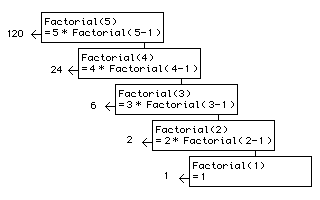

Into the Nth dimension.An Introduction to Recursion. |
|
|
'Things flow about so here!' she said at last in a plaintive tone, after she had spent a minute or so in vainly pursuing a large bright thing, that looked sometimes like a doll and sometimes like a work-box, and was always in the shelf next above the one she was looking at. 'And this one is the most provoking of all -- but I'll tell you what--' she added. as a sudden thought struck her. 'I'll follow it up to the very top shelf of all. It'll puzzle it to go through the ceiling, I expect!' 1 One of the more often underused and misunderstood programming techniques is recursion. Many languages don't support recursion (which may be why you're not familiar with it) but luckily Lingo does. Even so, you may not be familiar with its uses and strengths. This article is intended to introduce you to the strange world of recursion. With any luck, you will come out the other side feeling more comfortable with the idea, and preferably without feeling like Alice in the Looking Glass World. Most of the time, when you want to do something repeatedly in Lingo, you make a repeat loop and then put the intructions that need to be repeated inside the loop. This is called iteration, and it feels very natural to most people. "Do this with that thing so many times", or as Lingo has it: repeat with that = 1 to N doThisWith that end repeat When you use iterative processes like this, you mentally stay in the same level the whole time. It might be that inside the loop you call another handler, nesting (or 'popping') one level deeper into the "call stack". In this case, you call the handler 'doThisWith' every time around the loop. When you are constructing this upper level iterative loop, the exact details of the inner workings of 'doThisWith' are not so important (this is the 'black box' principle); you might think of it as a machine to which you are feeding data, in this case, the variable 'that'. If you include a function call inside a repeat loop, you are similarly disinterested in exactly how that function returns a value to the level you are working on. Clearly you may need to attend to the details of that function, but when you do this, you focus your attention almost exclusively on it, ignoring the level above. These kind of abstractions give you the sensation that you are 'inside' a handler, and indeed you are 'in' a specific level of the call stack. A more common and obvious example: double clicking on a folder or directory in a Mac or Windows GUI is somewhat like calling a function which returns the location and contents of that folder to be displayed in a window. When you are 'inside' a folder, you are usually only interested in the contents of the folder, not the folder which contains it. Now it's time to break the metaphor altogether. Consider how different it would be if, instead of feeding data to another handler, we feed the data to the handler we are currently 'inside': on feedMe something return feedMe(something) end This function handler returns the result of a call to itself, which is the result of a call to itself which... will go on forever. Surprisingly enough, this makes logical sense, although this example is quite useless. (Un)fortunately, finite memory resources run out when dealing with infinite recursion. If you type the feedMe handler into a moviescript and then call it from the message window like this; put feedMe ("seymour")
...you will observe that Director will seize up and then warn you that it has run out of memory. If your computer is feeling particularly fragile, it might go down altogether, so it might be safer not to try this at all. If you are not feeling dangerous, or your computer is a bit flakey, put a breakpoint beside the line return feedMe(something) ...and when you call the handler, you can observe (in the debugger) the call stack getting bigger and bigger like a tumor in your computer's memory. Scary huh? When it gets too worrying (or boring), press stop on the control panel and nothing untoward will occur. The handler calls itself continuously, each time expecting to get a result back, each time getting deeper into the call stack. Eventually, memory runs out and Director complains or crashes. Er... is this actually useful, or am I just messing about with Lingo voodoo? Recursion is only strange if you are relying on the iterative paradigm (doing things in loops), especially if you think of function handlers as machines which take in raw material and then output a result. Think of handlers as processes instead of machines and the landscape is completely transformed. Recursion is actually quite intuitive, even being built into human languages too, though not without a certain amount of confusion, as recursion's chief PR man Douglas Hofstadter points out:
"The proverbial German phenomenon of the 'verb-at-the-end', about which droll tales of absentminded professors who would begin a sentence, ramble on for an entire lecture, and then finish up by rattling off a string of verbs by which their audience, for whom the stack had long since lost its coherence, would be totally nonplussed, are told, is an excellent example of linguistic pushing and popping." 2 Another example: Imagine that you are a detective investigating a crime, or an academic researching for a PhD. You might have several leads or avenues of exploration to follow up. You can't follow them all up at once so you start with one, remembering (in your internal call stack) that there are other leads to follow up if the first one bears no fruit. It's likely that some leads will present other leads to explore. This process continues recursively until you have a complete idea of the circumstances or system you are exploring. Following a lead, researching or investigating something is a recursive process. If a lead, path or branch of exploration leads to a worthless result you come back up to where you chose that path and take what's left. This is the essence of a search algorithm, something you may one day be called upon to implement. Recursion will always be a smart strategy for this. This means that, for recursion to be of any use, any recursive function must contain some kind of test to see whether it should call itself again, or whether it should 'come back up' with an actual result. The classic algorithm for illustrating recursion is the factorial. This is a mathematical function, usually denoted by an exclamation mark (!), of tremendous use to statisticians (zzz). It is derived from the formula N! = 1 x 2 x 3... x N ...So 5! is equal to 1 x 2 x 3 x 4 x 5 = 120 This could be done iteratively with Lingo like this: on iFactorial n
set r = 1
repeat with i = 1 to n
set r = r * i
end repeat
return r
end
or recursively like this: on rFactorial n if n = 1 then return n else return n * rFactorial(n-1) end These two function handlers return exactly the same set of results but in different ways. Notice how much more compact the recursive version is. It only returns a direct value if the parameter passed to it is 1. If you call this function with the parameter 5 for example: put rFactorial(5) ...it will return 5 multiplied by (the result of rFactorial(4) which is (4 multiplied by the result of rFactorial(3) which is (3 multiplied by the result of rFactorial(2) which is (2 multiplied by the result of rFactorial(1) which is (1))))) ...which is 120.  Okay, so what's the big deal. You've used repeat loops for years and you're happy with them, why bother with this weird stuff. You've never had to use a factorial in your life before. What about something more useful? MultiDimensional Arrays.If you have ever used another programming language like BASIC or Java, you will have noticed that, instead of lists, these languages use arrays. Lists and arrays are not quite the same. Arrays are of a fixed size and in most cases can only contain data of the same type. Arrays are created and accessed by specifying their dimensions. Lists, on the other hand can contain data of any type, all coexisting together in peace and harmony if necessary and, most interestingly, they can get bigger and smaller dynamically to accomodate their contents. Lists can be empty one minute and can contain references to all the bitmap cast members in your movie the next. It might appear, then, that lists are superior in almost every respect, but anyone who has built a complex structure of nested lists will appreciate that it is extremely taxing and inconvenient to construct such a thing, and tricky to fetch data from an innermost list because of all the required gymnastics with getat and setat. Sometimes what you really want is an array with known dimensions. It's sometimes just more convenient to refer to an item by a set of coordinates, instead of by a load of complicated nested function calls. Consider a world mapped in Lingo. You'd probably want to map that world in three dimensions. You could build the lists iteratively, but supposing you then want to add time to the system. You'll be adding another nested level to the whole structure. Pretty soon, your code will be a spaghetti of getAt and setAt statements and you'll have to turn the radio off and shout at people so that you can concentrate on 'where you are' in the structure. You'll also be hoping that someone doesn't decide to add parallel universes to the mix. Director 7 has made the process simpler, allowing access to multidimensional lists with a reference like itemIWant = my3DWorld[x][y][z] But this still leaves the problem of how to construct multidimensional lists in the first place. Making a script to make an N dimensional array without recursion is hell. Believe me, I've tried it. After several days of sweating, turning the radio off and getting people to be quiet, I gave up. After some time I got a book on LISP and realised that there was a much easier way. LISP is without question the most elegant programming language of all. It is the only one which comes close to the way we actually think. If you ever check it out, you will be surprised at how many Lingo keywords and concepts are borrowed from it, even if you have worked in other languages. It is surely no coincidence that the names of the two languages begin with the same two letters. After playing a little with LISP, I knocked up a multidimensional array in a couple of hours. To do this, I used the basic principle that the function designed to generate an array should call itself with the number of dimensions in the array reduced by one item each time, i.e. the list representing the dimensions of the array becomes continually truncated as the recursion goes deeper. Only when the number of dimensions is reduced to 0 will the recursion start to come up again, returning the values it has gathered and building the array as it goes. This allows arrays of 3, 4 or in fact any number of dimensions, limited of course by the memory available and the solidity of Director's list implementation, which I have experienced to be pretty reliable. This is the workhorse of the script I made, to be used as a general array generator in a moviescript: -- Recursive function to generate
-- multidimensional array
on generateArray dimensions, fillval
if count(dimensions) > 0 then
set car = getat(dimensions,1)
set inner = []
set cdr = duplicate(dimensions)
deleteat(cdr,1)
repeat with n = 1 to car
-- go deeper --
add inner, generateArray (cdr, fillval)
end repeat
return inner
else
-- come back up again --
return fillval
end if
end
The parameter 'dimensions' should be a list of integers. The parameter 'fillval' is the value which will be used as the default contents of the array. Every slot will contain this value in the beginning. If you leave it out, the array will be filled with void values. I challenge anyone to make a purely iterative equivalent of this handler. Remember it should be capable of making an array of any number of dimensions. Make sure you have the whole day free! [I have learned the hard way that as soon as you say something like this in public someone, usually Andrew White, sends you a three line example that does exactly what you want -Ed.] When you have given up amidst tears of frustration, study the recursive version. It receives the dimensions list, let's say it's [3, 4, 5, 2]. It takes the first item out of the list, then makes a copy of the dimensions list and removes the first item. giving 3 and [4, 5, 2]. This list missing the first item is passed to the same function as many times as there are dimensions specified in the removed first item. The return value of each is added to a list representing the 'current' dimension. This means that the first level of the array is an array of three arrays with dimension [4, 5, 2]. As an example, to generate a four dimensional array of zeroes which is 3 x 4 x 5 x 2 items in size, use the following Lingo: set myArray = generateArray([3, 4, 5, 2], 0) The local variable names 'car' and 'cdr', by the way, are borrowed from LISP and represent the first item of a list, and a list with the first item removed respectively. Modern LISPs also use the names 'first' and 'rest' for the same concepts, but for historical reasons, the names 'car' ("contents of the address register") and 'cdr' ("contents of the decrement register") are maintained to this day. LISP is nearly 40 years old and still in use! This 'first' and 'rest' splitting is the most common recursive technique. The function tests the parameter sent to it, and if it indicates that the bottom of the tree has been reached, it returns a simple result, initiating a climb back up the call stack. If the test indicates that there is more structure to deal with, it removes and processes the first item and then calls 'itself' with the rest of the list it received as a parameter. In pseudo code, a fairly standard recursive algorithm looks like this: on explore thisInformation
if thisInformation is finished_empty_completed then
-- back up again
return thisInformation
else
process theFirstPiece of thisInformation
-- recursion, deeper into the structure
explore therest
end if
end
Recursion then, is often best suited to complex, nested data structures. Most obviously this will be lists, but it might also be strings of XML or a file system. Iteration in these contexts is often a headache. Back to the array example. Considering that you've made your array, you probably want to get and set values inside it. If you're using Director 7, you can use the new syntax mentioned above. In earlier versions you could use a whole bunch of getat and setat calls, but why bother when we can use recursion to simplify the whole process: -- Recursive function to get value
-- from a multidimensional array
on getVal arr, coords
set car = getat(coords,1)
if count(coords) > 1 then
set cdr = duplicate(coords)
deleteat(cdr,1)
return getVal(getat(arr,car), cdr) -- go deeper --
else -- get value and come back up again --
return getat(arr,car)
end if
end
-- Function to set value in
-- a multidimensional array
on setVal arr, coords, newval
set i = getat(coords, count(coords))
set truncated = duplicate(coords)
deleteat(truncated,count(coords))
setat(getVal (arr, truncated), i, newval)
end
So to get a value from our array it would be something like set aValue = getVal(myArray, [1, 2, 2, 1]) ...and to set a value in our array it would be something like setVal(myArray, [1, 2, 2, 1], 99) Notice that the 'setVal' handler calls the recursive 'getVal' function to get the inner list it requires and then sets the value in the result. In its recursion, it processes the last item of the list rather than the first item, but the principle is the same. This technique, being based on Lingo's very fine list implementation, can contain data of mixed types, unlike arrays in other languages. (Hats off to Macromedia's "J.T.", a known LISP enthusiast.) For those of you who are comfortable with parent scripts, I have made a multidimensional array class (parent script), which you might find easier or cleaner to work with. This is downloadable as a Director file (in Mac or PC format) which also includes a movieScript containing the other examples in this article. The parent script version includes basic error checking and has the added interesting advantage of being able to create an array of runtime evaluated items. More complete documentation is provided with the getBehaviorDescription handler, so you can read it in the behavior inspector. I hope this article will stimulate some interest in recursion, or at the very least provide some useful array code. (I haven't seen really solid multidimensional array Lingo anywhere on the net, which is one reason I have written this article.) Recursion is useful in a large number of situations concerning complex, nested data, such as *ML parsing, search functions, databases and file systems. The mathematicians say that every problem that can be solved with iteration can also be solved with recursion and vice versa. They have proof, too, but they'll be the first to admit that it's usually easier to do it one way than the other. Clearly iteration is more appropriate in many situations, but as soon as you start dealing with nested data structures, it might be worth running through this article again, or even a book on LISP. It could save you days of frustration. You can download a sample movie that demonstrates these techniques in Mac or PC format. Notes
|